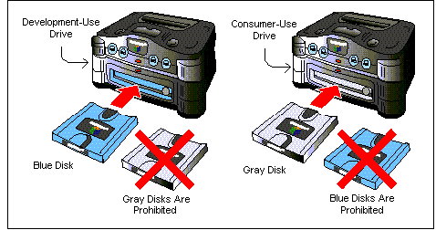

There are two types of 64DD drive: One for development use and the other for consumer use. Please note that these two types of drives have their own dedicated disks.
The development-use drive: The development-use 64DD utilizes development-use disks (blue disks), which are inserted in the blue bezel (disk insertion slot).
The consumer-use drive: The consumer-use 64DD utilizes mass-production disks (usually gray), which are inserted in the black bezel (disk insertion slot).
Please make sure to use the right kind of disk in the right kind of drive. The hardware of the two systems is different, and you can damage a drive if you insert the wrong kind of disk.
After an application program has been completely debugged, it is written to a consumer-use disk by Nintendo.

Nintendo® Confidential
Copyright © 1999
Nintendo of America Inc. All Rights Reserved
Nintendo and N64 are registered trademarks of Nintendo
Last Updated March, 1999